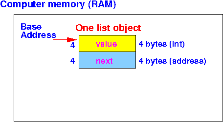

- To make the material more
concrete to explain,
I will use the following
(simple)
List object:
// File: /home/cs255001/demo/asm/4-linked-list/List.java public class List { int value; // int typed variable takes up 4 bytes List next; // reference variable contains an address, also 4 bytes // instance methods omitted - not relevant for discussion }I will assume that a linked list has been created and the head element of the list is stored in this variable:
List head;
- Recall that
this is the loop you
used in CS171 to
access all the
List elements and
print the
value in
each list element:
List ptr; ptr = head; while ( ptr != null ) { System.out.println( ptr.value ); ptr = ptr.next; }
- Example Program:
(Demo above code)

- Prog file: /home/cs255001/demo/asm/4-linked-list/ListMain.java
How to run the program:
- To compile: javac ListMain.java
- To run: java ListMain
Output:
cheung@aruba> java ListMain 11 22 33 44 55
- Observe
how
a high level language program
process a linked list:
- The program uses
a List typed variable
ptr to
reference (= point)
to the
current List object:
- The initialization
ptr = head will make
ptr point to
the first list element:
- The assignment
ptr = ptr.next will
make ptr point to
the list element that
follows the
currently pointed element:

Or: (after cleaning up the above figure):
- The initialization
ptr = head will make
ptr point to
the first list element:
- The program uses
a List typed variable
ptr to
reference (= point)
to the
current List object:
- For the Java program and the
explanation on what the
Java statements do, you can see that:
- Some current list element
is pointed to
by a reference variable
(in our program, the variable is
ptr)
- The program statements uses this
reference variable (ptr)
to access the
fields in
that specific list element:
ptr.value accesses the field "value" in the list element pointed to by ptr ptr.next accesses the field "next" in the list element pointed to by ptr
- Some current list element
is pointed to
by a reference variable
(in our program, the variable is
ptr)
- Information given to you
to access a
specific
linked list element (= object):
- You are given the address of the linked list object
Example: we are given the address 7000 - which is the start address of some list object
Notice that:
- The start address of
a list object is
similar to
the base address of
an array
I.e.: the fields in a list object always has a fixed offset from the base address of a list object !!!
- To access the
fields in a
list object, we can use the
base address +
offset approach (that we used
to access array elements):
The offsets used in linked list will be "computed" differently
In fact:
- The offsets used to access fields in a list element will depend on the structure of the List object !!!
Note:
- The alignment requirements
imposed on
int and
short typed fields
in a list object will
leave gaps between
data fields in
a list structure
Gaps are memory bytes that are not used...
Gaps will make the offset "computation" very difficult
Therefore:
- I will therefore use internal structures that can packed tightly (= no gaps) to simplify the discussion
I will now show you how to "compute" the offsets to access various data fields defined in a linked list structure using 2 different List classes
- Consider the List object
in
our example above which is
defined as:
// File: /home/cs255001/demo/asm/4-linked-list/List.java public class List { int value; // int typed variable takes up 4 bytes List next; // reference variable contains an address, also 4 bytes // instance methods omitted - not relevant for discussion }This picture shows the placement of the data fields value and next in a list element:
 Therefore:
- To access the
value field in
a list object, we use the
offset 0 (zero) from
the base address of the
list element:
address(value field) = base address(list element) + 0
- To access the
next field in
a list object, we use the
offset 4 from
the base address of the
list element:
address(next field) = base address(list element) + 4
I will show you an assembler program example later....
- To access the
value field in
a list object, we use the
offset 0 (zero) from
the base address of the
list element:
- Consider the List object
that is
defined as:
public class List { int value1; // int typed variable takes up 4 bytes short value2; // short typed variable takes up 2 bytes short value3; // short typed variable takes up 2 bytes List next; // reference variable contains an address, also 4 bytes // instance methods omitted - not relevant for discussion }This picture shows the placement of the data fields value and next in a list element:
Therefore:
- To access the
value1 field in
a list object, we use the
offset 0 (zero) from
the base address of the
list element:
address(value1 field) = base address(list element) + 0
- To access the
value2 field in
a list object, we use the
offset 4 from
the base address of the
list element:
address(value2 field) = base address(list element) + 4
- To access the
value3 field in
a list object, we use the
offset 6 (4+2) from
the base address of the
list element:
address(value3 field) = base address(list element) + 6
- To access the
next field in
a list object, we use the
offset 8 (4 + 2 + 2) from
the base address of the
list element:
address(next field) = base address(list element) + 8
I will show you an assembler program example later....
- To access the
value1 field in
a list object, we use the
offset 0 (zero) from
the base address of the
list element: